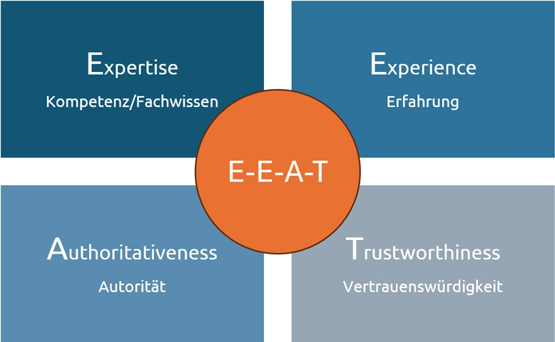

Analysen & Experten-Modelle
Vertrauensbildung durch E-E-A-T und datengesteuerte Optimierung via Google Analytics.
Das E-E-A-T Prinzip
Im Zeitalter von KI-generiertem Massen-Content ist Vertrauen zum entscheidenden Differenzierungsmerkmal geworden...
- Experience (Erfahrung): Nachweis von First-Hand-Knowledge...
- Expertise (Fachwissen): Formale Qualifikationen...
- Authoritativeness (Autorität): Bekanntheit der Entität...
- Trustworthiness (Vertrauen): Das Fundament...

Abb 4. Trust als Zentrum der E-E-A-T Faktoren.
Datengesteuerte Optimierung
Die Erfolgsmessung im Jahr 2026 hat sich gewandelt...
- AI Share of Voice (AI SOV): Messung der Markenpräsenz in KI-Antworten.
- Conversion-Vorteil: Statistiken zum Erfolg von GEO-Traffic.
- Dwell Time & INP: Analyse der Verweildauer und Interaktivität.

Abb 5. Performance-Analyse moderner Engagement-Metriken.